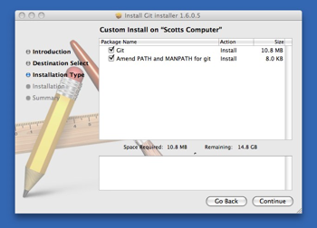

安装 Git¶
是时候动手尝试下 Git 了，不过得先安装好它。有许多种安装方式，主要分为两种，一种是通过编译源代码来安装；另一种是使用为特定平台预编译好的安装包。
从源代码安装¶
若是条件允许，从源代码安装有很多好处，至少可以安装最新的版本。Git 的每个版本都在不断尝试改进用户体验，所以能通过源代码自己编译安装最新版本就再好不过了。有些 Linux 版本自带的安装包更新起来并不及时，所以除非你在用最新的 distro 或者 backports，那么从源代码安装其实该算是最佳选择。
Git 的工作需要调用 curl，zlib，openssl，expat，libiconv 等库的代码，所以需要先安装这些依赖工具。在有 yum 的系统上（比如 Fedora）或者有 apt-get 的系统上（比如 Debian 体系），可以用下面的命令安装:
$ yum install curl-devel expat-devel gettext-devel openssl-devel zlib-devel
$ apt-get install libcurl4-gnutls-dev libexpat1-dev gettext libz-dev libssl-dev
之后，从下面的 Git 官方站点下载最新版本源代码:
然后编译并安装:
$ tar -zxf git-1.7.2.2.tar.gz
$ cd git-1.7.2.2
$ make prefix=/usr/local all
$ sudo make prefix=/usr/local install
现在已经可以用 git 命令了，用 git 把 Git 项目仓库克隆到本地，以便日后随时更新:
$ git clone git://git.kernel.org/pub/scm/git/git.git
在 Linux 上安装¶
如果要在 Linux 上安装预编译好的 Git 二进制安装包，可以直接用系统提供的包管理工具。在 Fedora 上用 yum 安装:
$ yum install git-core
在 Ubuntu 这类 Debian 体系的系统上，可以用 apt-get 安装:
$ apt-get install git
在 Mac 上安装¶
在 Mac 上安装 Git 有两种方式。最容易的当属使用图形化的 Git 安装工具，界面如图 1-7，下载地址在:
http://code.google.com/p/git-osx-installer
图 1-7. Git OS X 安装工具
另一种是通过 MacPorts (http://www.macports.org) 安装。如果已经装好了 MacPorts，用下面的命令安装 Git:
$ sudo port install git-core +svn +doc +bash_completion +gitweb
这种方式就不需要再自己安装依赖库了，Macports 会帮你搞定这些麻烦事。一般上面列出的安装选项已经够用，要是你想用 Git 连接 Subversion 的代码仓库，还可以加上 +svn 选项，具体将在第八章作介绍。（译注：还有一种是使用 homebrew（https://github.com/mxcl/homebrew）：brew install git。）
在 Windows 上安装¶
在 Windows 上安装 Git 同样轻松，有个叫做 msysGit 的项目提供了安装包，可以到 Google Code 的页面上下载 exe 安装文件并运行:
http://code.google.com/p/msysgit
完成安装之后，就可以使用命令行的 git 工具（已经自带了 ssh 客户端）了，另外还有一个图形界面的 Git 项目管理工具。